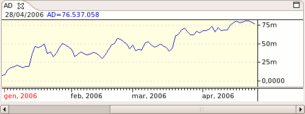

A market momentum indicator that associates changes in price with volume. The indicator is based on the premise that the more volume that accompanies a price move, the more significant the price move. When this indicator moves up, it shows that the security is being accumulated (i.e., bought), as most of the volume is associated with upward price movement. When the indicator moves down, it shows that the security is being distributed (i.e., sold), as most of the volume is associated with downward price movement.

Parameters